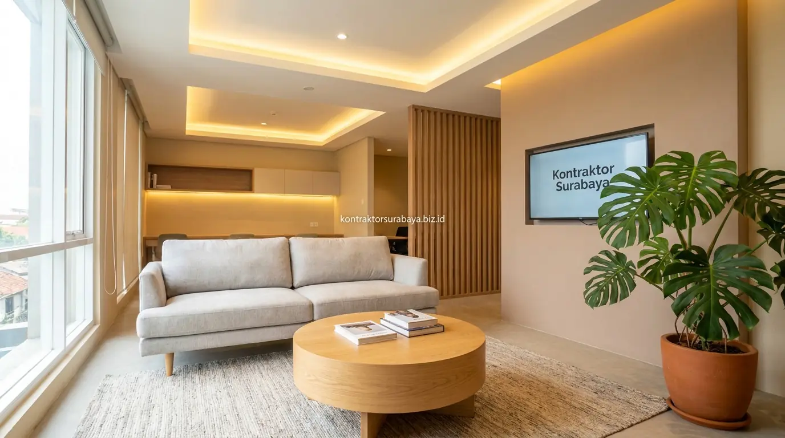

Desain interior kantor minimalis di Surabaya yang tepat dapat mengurangi kesan ruang kerja yang kaku dan gelap sehingga suasana kerja tim terasa lebih nyaman. Suasana kantor yang kaku dan minim pencahayaan sering menjadi penyebab tersembunyi menurunnya semangat kerja tim, meski pekerjaan itu sendiri tidak mengalami perubahan volume yang signifikan.
Bagian berikut membahas elemen desain interior kantor minimalis, tata letak ruang kerja, pemilihan warna, hingga faktor biaya yang perlu dipertimbangkan bersama jasa desain interior profesional agar renovasi ruang usaha Anda memberikan hasil optimal.
1. Mengapa Suasana Kantor Memengaruhi Produktivitas Tim?
Ruang kerja yang minim cahaya alami dan didominasi warna gelap cenderung membuat suasana terasa lebih berat dan cepat memicu kelelahan visual pada karyawan yang bekerja seharian di dalamnya. Ketika mata terus-menerus terpapar pantulan cahaya lampu neon yang tidak seimbang dengan pencahayaan ruangan, tingkat stres kognitif dan rasa kantuk cenderung meningkat lebih cepat menjelang siang hari.
Desain interior kantor minimalis modern umumnya mengatasi hal ini dengan memaksimalkan pencahayaan alami, memilih warna netral yang lebih terang, dan mengurangi elemen dekoratif berlebihan yang tidak memiliki fungsi jelas bagi aktivitas kerja. Lingkungan visual yang bersih dan rapi secara psikologis membantu pikiran karyawan tetap jernih, sehingga koordinasi pekerjaan berjalan lebih tanggap dan minim distorsi.

2. Elemen Utama Desain Interior Kantor Minimalis Modern
Beberapa elemen berikut umum diterapkan pada desain interior kantor minimalis untuk mendukung suasana kerja yang lebih nyaman dan dinamis:
- Pencahayaan alami dari jendela besar dikombinasikan dengan lampu LED warna netral: Penataan bukaan kaca memaksimalkan sinar matahari pagi, sementara lampu LED suhu 4000K (natural white) menjaga konsistensi cahaya meja kerja hingga sore hari tanpa membuat mata cepat lelah.
- Palet warna netral seperti putih, abu muda, dan aksen kayu pada furniture: Kombinasi warna ini memantulkan cahaya secara merata sekaligus menghadirkan nuansa hangat yang elegan, menghilangkan kesan perkantoran konvensional yang kaku.
- Tata letak ruang kerja terbuka (open plan) untuk memudahkan komunikasi tim: Menghilangkan sekat partisi tebal agar pertukaran ide antar anggota tim berlangsung lebih spontan dan cair tanpa batasan birokrasi ruang.
- Area kolaborasi terpisah dengan sofa atau meja bundar untuk diskusi singkat: Memberikan ruang alternatif bagi karyawan untuk berpindah suasana saat sesi brainstorming kilat, tanpa perlu memonopoli ruang rapat formal utama.
- Tanaman indoor sebagai elemen penyegar suasana ruangan tanpa memakan banyak ruang: Tanaman seperti lidah mertua (Sansevieria) atau monstera di sudut ruang membantu menyaring udara dalam ruangan ber-AC serta melembutkan garis-garis tegas arsitektur interior.
| Aspek Ruang Kerja | Kantor Konvensional Kubikel | Desain Interior Minimalis Modern |
|---|---|---|
| Pencahayaan & Suasana | Dominan lampu artifisial, terhalang sekat, terasa gelap dan kaku | ✅ Maksimal cahaya alami jendela, LED netral 4000K merata dan cerah |
| Interaksi Antar Tim | Terisolasi kubikel tinggi, koordinasi antar divisi cenderung lambat | ✅ Open-plan layout, komunikasi mengalir cepat dan kolaboratif |
| Efisiensi Lahan | Banyak sudut mati terbuang untuk koridor partisi tebal | ✅ Optimalisasi ruang maksimal, terasa lebih luas dan lega |
| Fleksibilitas Layout | Sulit diubah saat jumlah tim bertambah atau berubah formasi | ✅ Furniture modular mudah ditata ulang sesuai kebutuhan ekspansi |
| Kenyamanan Psikologis | Mudah memicu kelelahan visual dan kejenuhan kerja seharian | ✅ Visual bersih, aksen kayu hangat, dan tanaman indoor menyegarkan |
3. Bagaimana Menata Tata Letak Ruang Kerja Terbuka yang Nyaman?
Tata letak ruang kerja terbuka perlu memperhitungkan jarak antar meja agar karyawan tetap memiliki privasi kerja meski berada dalam satu ruangan besar. Sirkulasi lorong utama idealnya memiliki lebar minimal 1,2 meter agar lalu lalang staf tidak menyenggol kursi atau mengganggu fokus staf yang sedang bekerja intensif.
Penempatan partisi rendah (acoustic desk divider) setinggi 35–45 cm atau rak penyimpanan terbuka (open credenza) sebagai pembatas visual antar divisi membantu mengurangi gangguan suara tanpa menutup total pandangan. Dengan demikian, suasana kolaboratif tetap terjaga tanpa membuat ruangan terasa sempit atau terisolasi. Lihat berbagai contoh penataan ruang kerja komersial yang telah kami selesaikan di halaman galeri proyek.
4. Pemilihan Warna dan Material untuk Kesan Kantor Lebih Terang
Warna dinding yang lebih terang seperti putih gading (off-white) atau abu muda dapat memantulkan cahaya lebih baik dibanding warna gelap, sehingga ruangan terasa lebih lapang meski luas kantor terbatas di area ruko perkotaan Surabaya. Penggunaan satu dinding aksen (accent wall) dengan warna identitas perusahaan atau panel kayu kisi-kisi dapat memberikan daya tarik visual tanpa terkesan berantakan.
Material lantai dengan permukaan sedikit reflektif, seperti vinyl motif kayu terang (light oak) atau keramik doff berwarna netral, turut membantu memaksimalkan efek pencahayaan tanpa menimbulkan silau berlebihan pada layar komputer. Untuk furniture meja kerja, permukaan multiplex dilapisi High Pressure Laminate (HPL) bertekstur matte sangat dianjurkan karena tahan gores, mudah dibersihkan dari tumpahan kopi, dan tidak memantulkan silau lampu plafon.
5. Faktor yang Memengaruhi Biaya Renovasi Interior Kantor
Biaya renovasi interior kantor minimalis dapat bervariasi tergantung luas ruangan, jumlah area kolaborasi yang dibutuhkan, jenis furniture yang dipilih, serta tingkat perubahan yang dilakukan pada sistem pencahayaan dan partisi ruangan:
- Luas dan Kondisi Ruangan Eksisting: Kantor di ruko lama yang memerlukan pembongkaran dinding bata lama dan perataan lantai tentu membutuhkan biaya persiapan awal lebih besar dibanding unit kantor gedung bertingkat berstatus bare-shell.
- Kustomisasi Furniture vs Loose Furniture: Meja kerja custom berbahan multiplex finish HPL anti-rayap dibuat presisi sesuai lekuk denah ruangan, memberikan kerapian kabel lebih rapi dibanding furniture rakitan pabrik biasa.
- Penataan Jalur Elektrikal dan Kabel Jaringan (MEP): Kantor dengan kebutuhan penataan ulang instalasi listrik untuk stop kontak lantai (floor outlet), jalur kabel LAN server, dan saklar pencahayaan tambahan memerlukan pengerjaan terintegrasi agar kabel tidak berserakan di bawah meja.
- Pekerjaan Plafon dan Akustik: Pembuatan plafon gypsum bertingkat (drop ceiling) dengan indirect lighting atau pemasangan panel busa peredam suara di ruang rapat menjadi variabel anggaran tersendiri.
Untuk mendapatkan rincian anggaran yang transparan dan dapat disesuaikan dengan skala keuangan perusahaan, Anda dapat memanfaatkan layanan RAB & estimasi biaya dari tim perencana Kontraktor Surabaya.
"Desain kantor bukan hanya persoalan estetika ruang, melainkan investasi strategis perusahaan dalam menciptakan atmosfer kerja yang mendorong kreativitas, fokus, dan loyalitas tim setiap harinya." — Erlang Sinatrya, Lead Project Engineer Kontraktor Surabaya
Bagi Anda yang berencana merenovasi gedung kantor atau ruko komersial dari segi struktur maupun tata ruang, pelajari pula kapabilitas kami di layanan kontraktor bangunan Surabaya untuk memastikan keselarasan antara konstruksi fisik dan estetika interior.